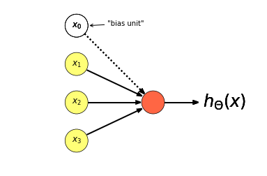
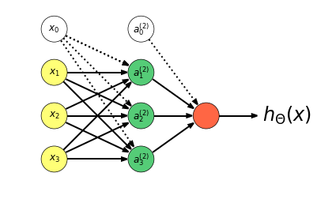
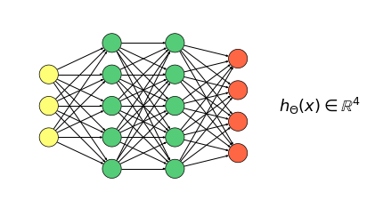
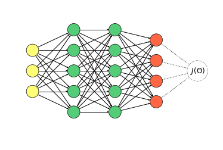

Machine Learning
Table of Contents
- 1. Linear Regression
- 2. Logistic Regression
- 3. Overfitting
- 4. Regularization
- 5. Neural Networks
- 5.1. Neuron Model: Logistic Unit
- 5.2. Neural Network
- 5.2.1. Hypothesis
- 5.2.2. Forward Propagation: Vectorized Implementation
- 5.2.3. Output Units: One-vs-all
- 5.2.4. Cost Function
- 5.2.5. Gradient Computation
- 5.2.6. Backpropagation Algorithm
- 5.2.7. Unrolling Parameters
- 5.2.8. Gradient Checking
- 5.2.9. Random Initialization
- 5.2.10. Training A Neural Network
- 6. Debugging a Learning Algorithm
- 6.1. Evaluating your Hypothesis
- 6.2. Training/Testing procedure for Linear Regression
- 6.3. Training/Testing procedure for Logistic Regression
- 6.4. Model Selection and Training/Validation/Test sets
- 6.5. Diagnosing Bias vs Variance in Model Selection
- 6.6. Choosing the Regularization Parameter \(\lambda\)
- 6.7. Learning Curves
- 6.8. Deciding what to do next
- 6.9. Neural Networks and Overfitting
- 6.10. Recommended Approach
- 6.11. Error Metrics for Skewed Classes
- 6.12. Precision/Recall
- 6.13. F\(_{1}\) Score (F Score)
- 6.14. Threshold
- 7. Support Vector Machines (SVM)
- 8. K-means
- 9. Principal Components Analysis (PCA)
- 10. Anomaly Detection
- 10.1. How to use anomaly detection?
- 10.2. The Gaussian distribution (Normal Distribution)
- 10.3. Anomaly detection algorithm
- 10.4. Algorithm evaluation
- 10.5. Anomaly detection vs. Supervised learning
- 10.6. Choosing Features to use
- 10.7. Multivariate gaussian distribution model
- 10.8. Original model vs. Multivariate model
- 11. Explanations
1 Linear Regression
1.1 Hypothesis
\[ \begin{align*} h_{\theta}(\mathbf{x}) & = \theta^{\top}\mathbf{x} = \theta_{0}\mathbf{x}_{0} + \theta_{1}\mathbf{x}_{1} + \theta_{2}\mathbf{x}_{2} + \cdots + \theta_{n}\mathbf{x}_{n} \\ x_{0} & = 1 \end{align*} \]
1.2 Cost Function
\[J(\theta) = \frac{1}{2m}\sum_{i=1}^{m}(h_\theta(\mathbf{x}^{(i)}) - y^{(i)})^2\]
1.3 Gradient Descent
Repeat until convergence:
\[ \begin{align*} & \theta_{j} := \theta_{j} - \alpha\frac{\partial}{\partial \theta_{j}} J(\theta_{0},\theta_{1},\dots,\theta{n}), j \in \{0,1,\dots,n\} \\ & \alpha \text{ is the } \textbf{learning rate} \end{align*} \]
or:
\[\theta_{j} := \theta_{j} - \alpha\frac{1}{m}\sum_{i=1}^{m}(h_{\theta}(\mathbf{x}^{(i)}) -y^{(i)})\mathbf{x}_{j}^{(i)}\]
1.3.1 Learning Rate
Plot the cost \(J(\theta)\) in regard to the number of iterations.
- if \(\alpha\) is too small: slow convergence.
- if \(\alpha\) is too large: \(J(\theta)\) may not decrease on every iteration; may not converge.
To choose \(\alpha\), try: \(0.001, 0.003, 0.01, 0.03, 0.1, 0.3, 1, \dots\)
1.4 Feature Scaling
Get every feature into approximately a \(-1 \leqslant x_{i} \leqslant +1\) range.
1.4.1 Mean Normalization
Make features have approximately zero mean and a \(-0.5 \leqslant x_{i} \leqslant +0.5\) range.
\[x_{i} \leftarrow \frac{x_{i} - \mu_{i}}{s_{i}}\]
where \(\mu_{i}\) is the average value of \(x_{i}\) in the training set,
and \(s_{i}\) is the range (max - min) of the values of \(x_{i}\) or his standard deviation when using the standard score(z-score).
We never normalize \(x_0\)!
1.5 Polynomial Regression
\[h_{\theta}(x) = \theta_{0} + \theta_{1}x + \theta_{2}x^{2} + \theta_{3}x^3\]
Always use feature scaling after adding polynomial features, but not on \(x_{0}\)!
1.6 Normal Equations
\[\theta = (\mathbf{X}^{\top}\mathbf{X})^{-1}\mathbf{X}^{\top}\mathbf{y}, \mathbf{X} \in \mathbb{R}^{m \times n+1}\]
\(m\) is the number of training examples, \(n\) is the number of features.
\[\begin{align*} \mathbf{X} & = \begin{bmatrix} 1 & \mathbf{x}_{1}^{(1)} & \mathbf{x}_{2}^{(1)} & \cdots & \mathbf{x}_{n}^{(1)} \\ 1 & \mathbf{x}_{1}^{(2)} & \mathbf{x}_{2}^{(2)} & \cdots & \mathbf{x}_{n}^{(2)} \\ \vdots & \vdots & \vdots & \ddots & \vdots \\ 1 & \mathbf{x}_{1}^{(m)} & \mathbf{x}_{2}^{(m)} & \cdots & \mathbf{x}_{n}^{(m)} \end{bmatrix} \in \mathbb{R}^{m \times n+1} \\ \mathbf{y} & = \begin{bmatrix} y^{(1)} \\ y^{(2)} \\ \vdots \\ y^{(m)} \end{bmatrix} \in \mathbb{R}^{m} \\ \theta & = \begin{bmatrix} \theta_{0} \\ \theta_{1} \\ \theta_{2} \\ \vdots \\ \theta_{n} \end{bmatrix} \in \mathbb{R}^{n+1} \end{align*}\]
No need to use feature scaling.
Use gradient descent over normal equation when we have more than 1000~10000 features.
If \(\mathbf{X}^{\top}\mathbf{X}\) is non-invertible:
- remove redundant features (linearly dependent).
- delete features or use regularization if too many features (\(m\leqslant n\)).
2 Logistic Regression
2.1 Hypothesis
Logistic Function (or Sigmoid Function):
\[ \begin{align*} h_{\theta}(\mathbf{x}) & = g(\theta^{\top}\mathbf{x}) \\ g(z) & = \frac{1}{1 + e^{-z}} \end{align*} \]
or:
\[ \begin{align*} & h_{\theta}(\mathbf{x}) = \frac{1}{1 + e^{-\theta^{\top}\mathbf{x}}} \\ & 0 \leq h_{\theta}(\mathbf{x}) \leq 1 \end{align*} \]
\(h_{\theta}(\mathbf{x})\) = estimated probability that \(y = 1\) on input \(\mathbf{x}\).
\(h_{\theta}(\mathbf{x}) = P(y = 1|\mathbf{x};\theta)\)
"probability that \(y = 1\), given \(\mathbf{x}\), parametrized by \(\theta\)".
2.2 Decision Boundary
Predict "\(y = 1\)" if \(h_{\theta}(\mathbf{x}) \ge 0.5\)
\(g(\theta^{\top}\mathbf{x}) \ge 0.5\) when \(\theta^{\top}\mathbf{x} \ge 0\)
Predict "\(y = 0\)" if \(h_{\theta}(\mathbf{x}) \lt 0.5\)
\(g(\theta^{\top}\mathbf{x}) \lt 0.5\) when \(\theta^{\top}\mathbf{x} \lt 0\)
2.3 Cost Function
The mean-square cost function used for linear regression is a non-convex function when used with sigmoid hypothesis !
Instead we will use the Cross-entropy loss (or log loss).
\[ \begin{align*} & Cost(h_{\theta}(\mathbf{x}), y) = \left. \begin{cases} -log(h_{\theta}(\mathbf{x})) & \text{if } y = 1 \\ -log(1 - h_{\theta}(\mathbf{x})) & \text{if } y = 0 \\ \end{cases} \right\} \\ & Cost(h_{\theta}(\mathbf{x}), y) = -(y) log(h_{\theta}(\mathbf{x})) -(1 - y) log(1 - h_{\theta}(\mathbf{x})) \end{align*} \]
so:
\[J(\theta) = -\frac{1}{m}\bigg[\sum_{i=1}^{m}y^{(i)} log(h_{\theta}(\mathbf{x}^{(i)})) + (1 - y^{(i)}) log(1 - h_{\theta}(\mathbf{x}^{(i)}))\bigg]\]
2.4 Gradient Descent
Repeat until convergence:
\[ \begin{align*} & \theta_{j} = \theta_{j} - \alpha\frac{\partial}{\partial \theta_{j}}J(\theta_{0}, \theta_{1},\dots,\theta_{n}), j \in \{0,1,\dots,n\} \\ & \alpha \text{ is the "}\textbf{learning rate}\text{"} \end{align*} \]
or:
\[\theta_{j} = \theta_{j} - \alpha\frac{1}{m}\sum_{i=1}^{m}(h_{\theta}(\mathbf{x}^{(i)}) - y^{(i)})\mathbf{x}_{j}^{(i)}\]
The algorithm looks identical to linear regression, but \(h_{\theta}(\mathbf{x})\) is different !
2.5 Multiclass Classification
Train a logistic regression classifier \(h_{\theta}^{(i)}(\mathbf{x})\) for each class \(i\) to predict the probability that \(y = i\).
On a new input \(\mathbf{x}\) , to make a prediction, pick the class \(i\) that maximizes:
\[\max_{i}h_{\theta}^{(i)}(\mathbf{x})\]
3 Overfitting
- An "Underfit" model is said to have "High Bias".
- An "Overfit" model is said to have "High Variance".
3.1 Adressing Overfitting
Options:
- Reduce number of features
- Manually select which features to keep.
- Model selection algorithm.
- Regularization
- Keep all the features, but reduce magnitude/values of parameters \(\theta_{j}\).
- Works well when we have lot of features, each of which contributes a bit to predicting \(y\).
4 Regularization
Small values for \(\theta_{0},\theta_{1},\dots,\theta_{n}\).
- "Simpler" hypothesis
- Less prone to overfitting
\[J(\theta) = \frac{1}{2m}\left[\sum_{i=1}^{m}(h_{\theta}(\mathbf{x}^{(i)}) - y^{(i)})^{2} + \lambda\sum_{j=1}^{n}\theta_{j}^{2}\right]\]
\(\lambda\) is the regularization parameter.
\(j\) starts at \(1\), we do not regularize \(\theta_{0}\)!
If \(\lambda\) is very large:
\(h_{\theta}(\mathbf{x}) = \theta_{0}\)
4.1 Regularized Linear Regression
4.1.1 Cost Function
\[J(\theta) = \frac{1}{2m}\left[\sum_{i=1}^{m}(h_{\theta}(\mathbf{x}^{(i)}) - y^{(i)})^{2}\right] + \frac{\lambda}{2m}\sum_{j=1}^{n}\theta_{j}^{2}\]
4.1.2 Gradient Descent
Repeat until convergence:
\[ \begin{align*} \theta_{0} & := \theta_{0} - \alpha\frac{1}{m}\sum_{i=1}^{m}(h_{\theta}(\mathbf{x}^{(i)}) - y^{(i)})\mathbf{x}_{0}^{(i)},\text{ we }\textbf{don't}\text{ penalize }\theta_{0}\text{!} \\ \theta_{j} & := \theta_{j} - \alpha\bigg[\frac{1}{m}\sum_{i=1}^{m}(h_{\theta}(\mathbf{x}^{(i)}) - y^{(i)})\mathbf{x}_{j}^{(i)} + \frac{\lambda}{m}\theta_{j}\bigg] \end{align*} \]
or:
\[ \begin{align*} & \theta_{j} := \theta_{j}\big(1 - \alpha\frac{\lambda}{m}\big) - \alpha\frac{1}{m}\sum_{i=1}^{m}(h_{\theta}(\mathbf{x}^{(i)}) - y^{(i)})\mathbf{x}_{j}^{(i)} \\ & 1 - \alpha\frac{\lambda}{m} \text{ is usually } \lt 1 \end{align*} \]
4.1.3 Normal Equation
\[ \begin{align*} \mathbf{X} & = \begin{bmatrix} (\mathbf{x}^{(1)})^{\top} \\ \vdots \\ (\mathbf{x}^{(m)})^{\top} \end{bmatrix} \in \mathbb{R}^{m \times (n+1)} \\ \mathbf{y} & = \begin{bmatrix} y^{(1)} \\ \vdots \\ y^{(m)} \end{bmatrix} \in \mathbb{R}^{m} \\ \mathbf{\theta} & = \Bigg(\mathbf{X}^{\top}\mathbf{X} + \lambda\begin{bmatrix} 0 & 0 & 0 & \cdots & 0 \\ 0 & 1 & 0 & \cdots & 0 \\ 0 & 0 & 1 & \cdots & 0 \\ \vdots & \vdots & \vdots & \ddots & \vdots \\ 0 & 0 & 0 & \cdots & 1 \end{bmatrix}\Bigg)^{-1}\mathbf{X}^{\top}\mathbf{y} \in \mathbb{R}^{n+1} \end{align*} \]
If \(m \leq n\), \(\mathbf{X}^{\top}\mathbf{X}\) will be singular or "non invertible", using regularization will correct this!
4.2 Regularized Logistic Regression
4.2.1 Cost Function
\[J(\theta) = -\frac{1}{m}\bigg[\sum_{i=1}^{m}y^{(i)} log(h_{\theta}(\mathbf{x}^{(i)})) + (1 - y^{(i)}) log(1 - h_{\theta}(\mathbf{x}^{(i)}))\bigg] + \frac{\lambda}{2m}\sum_{j=1}^{n}\theta_{j}^{2}\]
4.2.2 Gradient Descent
\[ \begin{align*} \theta_{0} & := \theta_{0} - \alpha\frac{1}{m}\sum_{i=1}^{m}(h_{\theta}(\mathbf{x}^{(i)}) - y^{(i)})\mathbf{x}_{0}^{(i)},\text{ we }\textbf{don't}\text{ penalize }\theta_{0}\text{!} \\ \theta_{j} & := \theta_{j} - \alpha\bigg[\frac{1}{m}\sum_{i=1}^{m}(h_{\theta}(\mathbf{x}^{(i)}) - y^{(i)})\mathbf{x}_{j}^{(i)} + \frac{\lambda}{m}\theta_{j}\bigg] \end{align*} \]
or:
\[ \begin{align*} & \theta_{j} := \theta_{j}\big(1 - \alpha\frac{\lambda}{m}\big) - \alpha\frac{1}{m}\sum_{i=1}^{m}(h_{\theta}(\mathbf{x}^{(i)}) - y^{(i)})\mathbf{x}_{j}^{(i)} \\ & 1 - \alpha\frac{\lambda}{m} \text{ is usually } \lt 1 \end{align*} \]
5 Neural Networks
5.1 Neuron Model: Logistic Unit

Drawing the bias unit is facultative.
\[h_{\theta}(\mathbf{x}) = \frac{1}{1 + e^{- \theta^{\top}\mathbf{x}}}\]
Sigmoid (logistic) activation function is another term for the non-linearity \(g(z) = \frac{1}{1 + e^{-z}}\)
\[x = \begin{bmatrix} x_{0} \\ x_{1} \\ x_{2} \\ x_{3} \end{bmatrix}, \theta = \begin{bmatrix} \theta_{0} \\ \theta_{1} \\ \theta_{2} \\ \theta_{3} \end{bmatrix}\]
\(\theta\) if also often called weights instead of parameters of the model.
5.2 Neural Network

The first layer is called the input layer.
The last layer is called the output layer.
The layers between the first and the last are called the hidden layers.
5.2.1 Hypothesis
\[ \begin{align*} a_1^{(2)} & = g(\Theta_{1,0}^{(1)}x_0 + \Theta_{1,1}^{(1)}x_1 + \Theta_{1,2}^{(1)}x_2 + \Theta_{1,3}^{(1)}x_3) \\ a_2^{(2)} & = g(\Theta_{2,0}^{(1)}x_0 + \Theta_{2,1}^{(1)}x_1 + \Theta_{2,2}^{(1)}x_2 + \Theta_{2,3}^{(1)}x_3) \\ a_3^{(2)} & = g(\Theta_{3,0}^{(1)}x_0 + \Theta_{3,1}^{(1)}x_1 + \Theta_{3,2}^{(1)}x_2 + \Theta_{3,3}^{(1)}x_3) \\ h_{\Theta}(x) & = a_1^{(3)} = g(\Theta_{1,0}^{(2)}a_0^{(2)} + \Theta_{1,1}^{(2)}a_1^{(2)} + \Theta_{1,2}^{(2)}a_2^{(2)} + \Theta_{1,3}^{(2)}a_3^{(2)}) \end{align*} \]
\(a_{i}^{(j)}\) is the activation of unit \(i\) in layer \(j\).
\(\Theta^{(j)}\) is the matrix of weights controlling function mapping from layer \(j\) to layer \(j+1\).
If network has \(S_j\) units in layer \(j\), \(S_{j+1}\) units in layer \(j+1\), then \(\Theta^{(j)} \in \mathbb{R}^{S_{j+1}\times (S_j + 1)}\).
5.2.2 Forward Propagation: Vectorized Implementation
\[\begin{align*} z^{(2)} & = \Theta^{(1)}a^{(1)}, a^{(1)} = x \\ a^{(2)} & = g(z^{(2)}) \\ z^{(3)} & = \Theta^{(2)}a^{(2)} \\ h_{\Theta} & = a^{(3)} = g(z^{(3)}) \end{align*} \]
\(g\) is the sigmoid function.
5.2.3 Output Units: One-vs-all

With a training set : \(((x^{(1)},y^{(1)}), (x^{(2)},y^{(2)}), \dots, (x^{(m)},y^{(m)}))\),
\[ y^{(i)}\text{ is one of } \begin{bmatrix} 1 \\ 0 \\ 0 \\ 0 \end{bmatrix}, \begin{bmatrix} 0 \\ 1 \\ 0 \\ 0 \end{bmatrix}, \begin{bmatrix} 0 \\ 0 \\ 1 \\ 0 \end{bmatrix}, \begin{bmatrix} 0 \\ 0 \\ 0 \\ 1 \end{bmatrix} \]
5.2.4 Cost Function
- \(L\) = total number of layers in the network.
- \(S_l\) = number of units (not counting bias unit) in layer \(l\).
- \(K = S_L\) is the number of units in the output layer.
\[J(\Theta) = -\frac{1}{m}\bigg[\sum_{i=1}^m \sum_{k=1}^K y_k^{(i)}log(h_\Theta(x^{(i)}))_k + (1-y_k^{(i)})log(1 - (h_\Theta(x^{(i)}))_k)\bigg] + \frac{\lambda}{2m}\sum_{l=1}^L\sum_{i=1}^{S_l}\sum_{j=1}^{S_{l+1}}(\Theta_{j,i}^{(l)})^2\]
\(h_\Theta(x) \in \mathbb{R}^K\), \((h_\theta(x))_k\) is the \(k^{th}\) output of the hypothesis.
\(\lambda\) is the regularization parameter.
\(i\) starts at \(1\), we do not regularize \(\Theta_{j,0}^{(l)}\)!
5.2.5 Gradient Computation

\[ \begin{align*} \delta^{(4)} & = \frac{\partial\: J(\theta)}{\partial\: z^{(4)}} = a^{(4)} - y,\: a^{(4)} = h_\Theta(x) \\ \delta^{(3)} & = \frac{\partial\: J(\theta)}{\partial\: z^{(3)}} = (\Theta^{(3)})^\top\delta^{(4)}\:.*\:g'(z^{(3)}) = (\Theta^{(3)})^\top\delta^{(4)}\:.*\:\frac{\partial\: a^{(3)}}{\partial\: z^{(3)}} = (\Theta^{(3)})^\top\delta^{(4)}\:.*\:a^{(3)}(1 - a^{(3)}) \\ \delta^{(2)} & = \frac{\partial\: J(\theta)}{\partial\: z^{(2)}} = (\Theta^{(2)})^\top\delta^{(3)}\:.*\:a^{(2)}(1 - a^{(2)}) \end{align*} \]
There is no \(\delta^{(1)}\)!
If we ignore \(\lambda\) or if \(\lambda = 0\):
\[\frac{\partial\: J(\Theta)}{\partial\: \Theta_{ij}^{(l)}} = a_j^{(l)}\delta_i^{(l+1)}\]
5.2.6 Backpropagation Algorithm
Given a training set \(\{(x^{(1)},y^{(1)}),\dots,(x^{(m)},y^{(m)})\}\).
Set \(\Delta_{ij}^{(l)} = 0\) (for all \(l\), \(i\), \(j\)), to serve as a gradient accumulator.
For \(i = 1\) to \(m\):
- Set \(a^{(1)} = x^{(i)}\).
- Perform forward propagation to compute \(a^{(l)}\) for \(l = 2,3,\dots,L\).
- Using \(y^{(i)}\), compute \(\delta^{(L)} = a^{(L)} - y^{(i)}\).
- Compute \(\delta^{(L-1)}, \delta^{(L-2)},\dots,\delta^{(2)}\).
- Increment the gradient \(\Delta_{ij}^{(l)} = \Delta_{ij}^{(l)} + a_j^{(l)}\delta_i^{(l+1)}\), vectorized as \(\Delta^{(l)} = \Delta^{(l)} + \delta^{(l+1)}(a^{(l)})^{\top}\).
Then, we can compute the gradients:
\[\begin{array}{l} D_{ij}^{(l)} = \frac{1}{m}\:\Delta_{ij}^{(l)} + \frac{\lambda}{m}\Theta_{ij}^{(l)} & \text{if } j \neq 0 \\ D_{ij}^{(l)} = \frac{1}{m}\:\Delta_{ij}^{(l)} & \text{if } j = 0 \end{array}\Bigg\}\: \frac{\partial\: J(\Theta)}{\partial\: \Theta_{ij}^{(l)}} = D_{ij}^{(l)}\]
5.2.7 Unrolling Parameters
In advanced optimization implementations, the gradient matrix often need to be "flattened" to a single vector.
5.2.8 Gradient Checking
Compute the gradient using the Central Difference Formula.
\[ \begin{align*} & \frac{\partial\: J(\Theta)}{\partial\: \Theta_j} \approx \frac{J(\Theta_1,\Theta_2,\dots,\Theta_j + \epsilon,\dots,\Theta_n) - J(\Theta_1,\Theta_2,\dots,\Theta_j - \epsilon,\dots,\Theta_n)}{2\epsilon} \\ & \Theta \in \mathbb{R}^n, \Theta\text{ is an unrolled version of }\Theta^{(1)},\Theta^{(2)},\dots,\Theta^{(L-1)} \\ & \Theta = [\Theta_1,\Theta_2,\dots,\Theta_n] \\ & \epsilon = 10^{-4} \end{align*} \]
Finally, check the numerical estimation of the gradient against the backprop calculated gradient by calculating the relative difference between them:
\[\Delta = \frac{\|D_{numerical}(\theta)-D(\theta)\|}{\|D_{numerical}(\theta)+D(\theta)\|}\]
\(\Delta\) should be small, on the order of \(10^{-9}\).
5.2.9 Random Initialization
We cannot initialize the parameters to \(0\)!
Instead, we initialize each \(\Theta_{ij}^{(l)}\) to a random value in \([-\epsilon,\epsilon]\).
For \(\theta^{(l)}\), it is an effective strategy to choose \(\epsilon\) as:
\[\epsilon = \frac{\sqrt{6}}{\sqrt{S_{l}+S_{l+1}}}\]
5.2.10 Training A Neural Network
The number of input units \(S_1\) is the dimension of features \(x^{(i)}\).
The number of output units \(S_L\) is the number of classes \(K\).
We can have \(1\) or more hidden layers with the same number of units in each layer.
Training:
- Randomly initialize weights.
- Implement forward propagation to get \(h_\Theta(x^{(i)})\) for each \(x^{(i)}\).
- Implement code to compute Cost function \(J(\Theta)\).
- Implement backprop to compute partial derivatives \(\frac{\partial}{\partial\: \Theta_{ij}^{(l)}}J(\Theta)\).
- Use gradient checking to compare \(\displaystyle \frac{\partial}{\partial\: \Theta_{ij}^{(l)}}J(\Theta)\) computed using backpropagation vs. using numerical estimation of gradient of \(J(\Theta)\).
- Use gradient descent or advanced optimization methods with backpropagation to try to minimize \(J(\Theta)\) as a function of parameters \(\Theta\).
\(J(\Theta)\) is non-convex!
6 Debugging a Learning Algorithm
6.1 Evaluating your Hypothesis
Split your examples between a Training Set (70%) and a Test Set (30%).
If the data is not randomly ordered, it is better to randomly shuffle it before picking these sets.
6.2 Training/Testing procedure for Linear Regression
- Learn parameter \(\theta\) from training data (minimizing training error \(J(\theta)\)).
- Compute test set error:
\[J_{test}(\theta) = \frac{1}{2m_{test}}\sum_{i=1}^{m_{test}}(h_{\theta}(x_{test}^{(i)}) - y_{test}^{(i)})^2\]
6.3 Training/Testing procedure for Logistic Regression
- Learn parameter \(\theta\) from training data.
- Compute test set error:
\[J_{test}(\theta) = -\frac{1}{m_{test}}\sum_{i=1}^{m_{test}} y_{test}^{(i)}\log(h_{\theta}(x_{test}^{(i)})) + (1 - y_{test}^{(i)})\log(1 - h_{\theta}(x_{test}^{(i)}))\]
- or the alternative Misclassification error (0/1 misclassification error):
\[ \begin{align*} err(h_{\theta}(x),y) & = \begin{cases} 1 & \text{ if } & h_{\theta}(x) \ge 0.5, y = 0 \\ & \text{ or if } & h_{\theta}(x) \lt 0.5, y = 1 \\ 0 & \text{ otherwise} & \end{cases} \\ \text{Test error} & = \frac{1}{m_{test}}\sum_{i=1}^{m_{test}}err(h_{\theta}(x_{test}^{(i)}),y_{test}^{(i)}) \end{align*}\]
6.4 Model Selection and Training/Validation/Test sets
To find the degree \(d\) of a polynomial feature:
- Split your examples between a Training Set (60%), a Cross Validation Set (20%) and a Test Set (20%).
- Fit \(\theta^{(d)}\) for different values of \(d\) on the Training Set.
\[J_{train}(\theta) = \frac{1}{2m_{train}}\sum_{i=1}^{m_{train}}(h_{\theta}(x_{train}^{(i)}) - y_{train}^{(i)})^2\]
- Pick \(\theta^{(d)}\) with the lowest cost on Validation Set.
\[J_{cv}(\theta) = \frac{1}{2m_{cv}}\sum_{i=1}^{m_{cv}}(h_{\theta}(x_{cv}^{(i)}) - y_{cv}^{(i)})^2\]
- Estimate generalization error on Test Set with selected \(\theta^{(d)}\).
\[J_{test}(\theta) = \frac{1}{2m_{test}}\sum_{i=1}^{m_{test}}(h_{\theta}(x_{test}^{(i)}) - y_{test}^{(i)})^2\]
6.5 Diagnosing Bias vs Variance in Model Selection
If we have a Bias (underfit) problem:
\[\begin{align*} & J_{train}(\theta)\text{ and }J_{cv}(\theta)\text{ will be high.} \\ & J_{cv}(\theta) \approx J_{train}(\theta) \end{align*}\]
If we have a Variance (overfit) problem:
\[\begin{align*} & J_{train}(\theta)\text{ will be low.} \\ & J_{cv}(\theta) \gg J_{train}(\theta) \end{align*}\]
6.6 Choosing the Regularization Parameter \(\lambda\)
To find the regularization parameter \(\lambda\) of a polynomial feature:
- Split your examples between a Training Set (60%), a Cross Validation Set (20%) and a Test Set (20%).
- Fit \(\theta^{(\lambda)}\) for different values of \(\lambda\) on the Training Set using regularized cost function.
\[\begin{align*} & J_{train}(\theta) = \frac{1}{2m_{train}}\sum_{i=1}^{m_{train}}(h_{\theta}(x_{train}^{(i)}) - y_{train}^{(i)})^2 + \frac{\lambda}{2m_{train}}\sum_{j=1}^{n}\theta_{j}^{2} \\ & \lambda \in \{0, 0.01, 0.02, 0.04, 0.08,\dots, 10.24\} \end{align*}\]
- Pick \(\theta^{(\lambda)}\) with the lowest cost on Validation Set, using un-regularized cost function.
\[ J_{cv}(\theta) = \frac{1}{2m_{cv}}\sum_{i=1}^{m_{cv}}(h_{\theta}(x_{cv}^{(i)}) - y_{cv}^{(i)})^2\]
- Estimate generalization error on Test Set with selected \(\theta^{(\lambda)}\), using un-regularized cost function.
\[ J_{test}(\theta) = \frac{1}{2m_{test}}\sum_{i=1}^{m_{test}}(h_{\theta}(x_{test}^{(i)}) - y_{test}^{(i)})^2\]
6.7 Learning Curves
To plot learning curves:
- Split your examples between a Training Set (60%), a Cross Validation Set (20%) and a Test Set (20%).
Fit \(\theta^{(m)}\) for samples of size \(m\) of the Training Set using regularized or un-regularized cost function.
\[\begin{align*} & J_{train}(\theta) = \frac{1}{2m_{train}}\sum_{i=1}^{m_{train}}(h_{\theta}(x_{train}^{(i)}) - y_{train}^{(i)})^2 \\ & \text{or:} \\ & J_{train}(\theta) = \frac{1}{2m_{train}}\sum_{i=1}^{m_{train}}(h_{\theta}(x_{train}^{(i)}) - y_{train}^{(i)})^2 + \frac{\lambda}{2m_{train}}\sum_{j=1}^{n}\theta_{j}^{2} \end{align*}\]
Plot \(J(\theta^{(m)})\) on Training Set for each \(\theta^{(m)}\), using un-regularized cost function.
\[J_{train}(\theta) = \frac{1}{2m_{train}}\sum_{i=1}^{m_{train}}(h_{\theta}(x_{train}^{(i)}) - y_{train}^{(i)})^2\]
Plot \(J(\theta^{(m)})\) on Validation Set for each \(\theta^{(m)}\), using un-regularized cost function.
\[J_{cv}(\theta) = \frac{1}{2m_{cv}}\sum_{i=1}^{m_{cv}}(h_{\theta}(x_{cv}^{(i)}) - y_{cv}^{(i)})^2\]
If a learning algorithm is suffering from high bias, getting more data will not help much.
If a learning algorithm is suffering from high variance, getting more data is likely to help.
6.8 Deciding what to do next
- Get more training examples \(\rightarrow\) fixes high variance.
- Try smaller set of features \(\rightarrow\) fixes high variance.
- Try getting additional features \(\rightarrow\) fixes high bias.
- Try adding polynomial features \(\rightarrow\) fixes high bias.
- Try increasing \(\lambda\) \(\rightarrow\) fixes high variance.
- Try decreasing \(\lambda\) \(\rightarrow\) fixes high bias.
6.9 Neural Networks and Overfitting
Small neural networks:
- Are more prone to underfitting.
- are computationally cheaper.
Large neural networks:
- Are more prone to overfitting, which can be adressed by using regularization (\(\lambda\)).
- Are computationally more expensive.
- We can choose the number of hidden layers by fitting \(\theta^{(L)}\) for an increasing number of hidden layers(\(L\)) on a Training Set,
then pick the lowest cost on a Validation Set.
6.10 Recommended Approach
- Start with a simple algorithm that you can implement quickly. Implement it and test it on your cross-validation data.
- Plot learning curves to decide if more data, or features, etc. are likely to help.
- Error analysis: Manually examine the examples(in cross-validation set) that your algorithm made erros on. See if you can spot any systematic trend in what type of example it is make errors on by comparing model accuracies.
6.11 Error Metrics for Skewed Classes
We have a case of skewed classes when we have far more examples of one class than the other classes.
With skewed classes it becomes much harder to use classification accuracy!
6.12 Precision/Recall
\(y = 1\) in presence of a rare class that we want to detect.
|
|
Actual Class |
||
| 1 | 0 | ||
|
Predicted Class |
1 |
True positive |
False positive |
|
0 |
False negative |
True negative |
|
Precision:
\[\begin{align*} & \frac{\text{True Positives}}{\text{Predicted Positives}} = \frac{\text{True Positives}}{\text{True Positive}+\text{False Positives}} \\ & \\ & \text{High precision is a good thing.} \end{align*}\]
Recall:
\[\begin{align*} & \frac{\text{True Positives}}{\text{Actual Positives}} = \frac{\text{True Positives}}{\text{True Positives}+\text{False Negatives}} \\ & \\ & \text{High recall is a good thing.} \end{align*}\]
A classifier with high presision and high recall is a good classifier.
Precision/Recall is often a better way to evaluate an algorithm in the presence of skewed classes than looking at classificator error or classificator accuracy.
6.13 F\(_{1}\) Score (F Score)
To compare precision/recall numbers:
\[ 2\frac{PR}{P+R}\]
- If \(P = 0\) or \(R = 0\) then F-Score \(= 0\).
- If \(P = 1\) and \(R = 1\) then F-Score \(= 1\).
- \(0 \le\) F-Score \(\le 1\)
6.14 Threshold
In Logistic Regression:
\[\begin{align*} & 0 \le h_{\theta}(x) \le 1 \\ & \text{Predict }1\text{ if }h_{\theta}(x) \ge\text{ threshold} \\ & \text{Predict }0\text{ if }h_{\theta}(x) \lt\text{ threshold} \\ \end{align*}\]
By varying the threshold we can control the trade-off between precision and recall.
- With a high threshold, we get a high presision and a low recall.
- With a low threshold, we get a low presision and a high recall.
To find the optimal threshold for your model:
- Evaluate different values of threshold on the Cross Validation Set and pick the one that gives you the maximum value of F Score.
7 Support Vector Machines (SVM)
- Unlike Logistic Regression, \(h_{\theta}(x)\) doesn't give us a probability, but instead we get a direct prediction of 1 or 0.
- SVM has a convex optimization problem, so you get a global minimum.
7.1 C Regularization
- Large C gives a hypothesis of high variance, very sensitive to outliers.
- Small C gives a hypothesis of high bias.
\[C = \frac{1}{\lambda}\].
7.2 Gaussian Kernel (Radial Basis Function Kernel)
Choose Gaussian Kernel when \(n\) is small and/or \(m\) is large.
e.g. A large 2D training set.
Make sure you perform feature scaling before using a Gaussian kernel!
\[\begin{align*} K(x, x') &= \exp(-\frac{\|x - x'\|^2}{2\sigma^2}) &\\ & = \exp(-\gamma\|x - x'\|^2) &\text{where } \gamma = \frac{1}{2\sigma^2} \end{align*}\]
Define \(\sigma^2\):
- Large \(\sigma^2\) (small \(\gamma\)) gives high bias.
- Small \(\sigma^2\) (large \(\gamma\)) gives high variance.
7.3 Linear Kernel
Means No Kernel!
Choose Linear Kernel when \(n\) is large and \(m\) is small.
e.g. A training set with lots of features but few examples.
If the number of features is large, using the linear kernel is good enough!
8 K-means
K Means is a Clustering Algorithm that groups the data into coherent clusters.
Inputs:
- \(K\) (number of clusters)
- Training Set with no labels associated \(\{x^{(1)}, x^{(2)}, \dots, x^{(m)}\}\), \(x^{(i)} \in \mathbb{R}^n\)
8.1 Distortion Cost Function
\[J(c^{(i)},\dots,c^{(m)},\mu_1,\dots,\mu_K) = \frac{1}{m}\sum_{i=1}^{m}\|x^{(i)} - \mu_{c^{(i)}}\|^2\]
\(c^{(i)}\) = index of cluster \((1,2,\dots,K)\) to wich example \(x^{(i)}\) is currently assigned, \(i \in \mathbb{R}^m\).
\(\mu_k\) = cluster centroid \(k\) \((k \in \{1,2,\dots,K\},\:\mu_k \in \mathbb{R}^n)\).
\(\mu_{c^{(i)}}\) = cluster centroid of cluster to which example \(x^{(i)}\) has been assigned.
J is not convex.
8.2 Algorithm
- Randomly initialize \(K\) cluster centroids \(\mu_1, \mu_2, \dots, \mu_K\).
- Repeat:
for \(i=1\) to \(m\):
Minimize \(J\) w.r.t \(\:c^{(1)},\dots,c^{(m)}\).
\(c^{(i)}\) = index (from \(1\) to \(K\)) of cluster centroid closest to \(x^{(i)}\).
for \(k=1\) to \(K\):
Minimize \(J\) w.r.t \(\:\mu_{(1)},\dots,\mu_{(K)}\).
\(\mu_k\) = average (mean) of points assigned to cluster \(k\).
If a cluster has no points assigned to it, just eliminate it, ended up with \(K-1\) clusters.
8.3 Random Initialization
- Randomly pick \(K\) training examples, \(k < m\).
- Set \(\mu_1, \mu_2, \dots, \mu_K\) to these examples.
8.4 Local Optima
To avoid K Means getting stuck at local optima when \(K < 10\) and increase the odds of finding the best possible clustering, we try multiple random initialization.
For \(i=1\) to \(100\):
- Randomly initialize K-means.
- Run K-means. Get \(c^{(1)},\dots,c^{(m)},\mu_{(1)},\dots,\mu^{(K)}\).
- Compute Distortion Cost Function \(J(c^{(1)},\dots,c^{(m)},\mu_{(1)},\dots,\mu^{(K)})\).
Pick clustering that gave the lowest cost.
When \(K\) is large the optimal clustering is often found quite early and this is not needed.
8.5 Choosing Number of Clusters (\(K\))
We can use the elbow method by plotting the Cost w.r.t the number of clusters. Although it's often not very useful.
We can also choose K in regard of our needs.
9 Principal Components Analysis (PCA)
PCA is a procedure that uses an orthogonal transformation to convert a set of examples of possibly correlated features into a set of values of linearly uncorrelated variables called Principal Components.
9.1 Algorithm
\(A \in \mathbb{R}^{m \times n}\), \(m\) is the number of examples, \(n\) is the number of features.
We need to choose vectors onto which to project the data \(A\) as to maximize the variance of the data (or minimize the projection error).
Before using PCA it is important to apply mean normalization and, if necessary (features are on different scales), feature scaling to the data \(A\):
\[\begin{align*} & A_{normalized} = \frac{A - \mu}{\sigma} \\ & \mu \text{ is the }\textbf{vector of the features means.} \\ & \sigma \text{ is the }\textbf{vector of the features standard-deviations.} \end{align*}\]
Compute the Covariance Matrix of the data \(A\):
\[C = \frac{A_{normalized}^{\top} A_{normalized}}{m - 1}\]
Proceed to the Singular Value Decomposition (SVD) of the Covariance Matrix \(C\):
\[C = U \Sigma V^{\top}\]
where:
\[\begin{align*} & C C^{\top} = (U \Sigma V^{\top})(U \Sigma V^{\top})^{\top} = U \Sigma V^{\top} V \Sigma^{\top} U^{\top} = U \Sigma^{2} U^{\top} \\ & C^{\top} C = (U \Sigma V^{\top})^{\top}(U \Sigma V^{\top}) = V \Sigma^{\top} U^{\top} U \Sigma V^{\top} = V \Sigma^{2} V^{\top} \\ & C = Q \Lambda Q^{\top} \\ & C = C^{\top} \longrightarrow U = V = Q \text{ and } \Sigma = \Lambda \\ & \\ & U \text{ and } V \text{ are }\textbf{equal and othogonal}\text{ matrices which contains the }\textbf{Principal Components.} \\ & \Sigma \text{ is a }\textbf{diagonal}\text{ matrix which contains the }\textbf{Singular Values.} \end{align*}\]
so:
\[\begin{align*} & U \text{ and } V \text{ are the }\textbf{eigenvectors of } C \text{ (ordered according to } \Sigma \textbf{) and } U=V \in \mathbb{R}^{n \times n}\text{.} \\ & \Sigma \text{ are the }\textbf{eigenvalues of } C \text{ (in decreasing order) and } \Sigma \in \mathbb{R}^{n \times n}\text{.} \\ & \\ & \Sigma = \begin{bmatrix} \sigma_{11} & 0 & 0 & \cdots & 0 \\ 0 & \sigma_{22} & 0 & \cdots & 0 \\ 0 & 0 & \sigma_{22} & \cdots & 0 \\ \vdots & \vdots & \vdots & \ddots & \vdots \\ 0 & 0 & 0 & \cdots &\sigma_{nn} \\ \end{bmatrix} \end{align*}\]
We project the data \(A\) on the eigenvectors of the subspace \(V\) reduced to \(n \times k\) dimensions.
\[A_{reduced} = A V_{reduced}; A \in \mathbb{R}^{m \times n}, V_{reduced} \in \mathbb{R}^{n \times k}\]
9.2 Choosing the number of Principal Components
To choose \(k\) (number of Principal Components), pick the smallest value of \(k\) for which:
\[\frac{\sum_{i=1}^{k} \sigma_{ii}}{\sum_{i=1}^{m} \sigma_{ii}} \geq 0.99\] (99% of variance retained).
9.3 Reconstruction from compressed representation
\[A_{reconstructed} = A_{reduced}V_{reduced}^{\top} = AV_{reduced}V_{reduced}^{\top}\]
9.4 Applications
Don't use PCA to prevent overfitting, use regularization instead. This way it's less likely to throw away valuable information.
10 Anomaly Detection
Anomaly detection is the identification of rare observations which raise suspicions by differing significantly from the majority of the data. It is usually used for fraud detection, manufacturing defects or medical problems.
10.1 How to use anomaly detection?
- We build a model that defines \(p(x)\) as the probability that \(x\) is a normal data point (not anomalous).
- We define a probability threshold \(\mathcal{E}\) depending on how sure we need to be.
- if \(p(x_{test}) \lt \mathcal{E} \rightarrow\) anomaly flag
- if \(p(x_{test}) \ge \mathcal{E} \rightarrow\) normal data
\(\mathcal{E}\) is usually choosen between 0 and 0.05.
10.2 The Gaussian distribution (Normal Distribution)
For \(x \in \mathbb{R}\), the Gaussian equation is:
\[ p(x;\mu,\sigma^{2}) = \frac{1}{\sqrt{2\pi}\,\sigma}\:exp\Big({-\frac{(x-\mu)^{2}}{2\sigma^{2}}}\Big)\]
where \(\mu\) is the mean, \(\sigma\) is the standard deviation and \(\sigma^{2}\) is the variance
10.3 Anomaly detection algorithm
For a training set \(\{x^{(1)}, x^{(2)}, ..., x^{(m)}\}\), with each example \(x \in \mathbb{R}^n\) and normally distributed \(x_n \sim \mathcal{N}(\mu_n, \sigma_n^2)\)
- Choose features \(x_{i}\) that you think might be indicative of anomalous examples.
- Fit parameters \(\mu_{1}\), …, \(\mu_{n}\), \(\sigma_{1}^{2}\), …, \(\sigma_{n}^{2}\)
\[ \begin{align*} \mu_{j} &= \frac{1}{m} \sum_{i=1}^{m}x_j^{(i)}\\ \sigma_{j}^{2} &= \frac{1}{m} \sum_{i=1}^{m}\big(x_{j}^{(i)} - \mu_{j}\big)^{2} \end{align*}\]
- Given new example \(x\), compute \(p(x)\):
\[ p(x)= \prod_{j=1}^{n}p(x_{j};\mu_{j},\sigma_{j}^{2})= \prod_{j=1}^{n}\underbrace{\frac{1}{\sqrt{2\pi}\,\sigma_{j}}\:exp\Big({-\frac{(x_{j}-\mu_{j})^{2}}{2\sigma_{j}^{2}}}\Big)}_\textbf{gaussian equation}\]
Anomaly if \(p(x) \lt \mathcal{E}\)
10.4 Algorithm evaluation
- Set \(\mathcal{E}\) at some value.
- Fit model \(p(x)\) on training set \(\{x^{(1)}, x^{(2)}, ..., x^{(m)}\}\).
- On a cross validation/test set predict \(x\):
\[ y = \begin{cases} 1 & \text{if p(x)} \lt \mathcal{E} \text{ (anomaly)} \\ 0 & \text{if p(x)} \ge \mathcal{E} \text{ (normal)} \end{cases}\]
Possible evaluation metrics to use:
- True positive, false positive, true negative, false negative
- Precision/Recall (\(F_{1}\text{-score}\)):
\[ F_{1} = \frac{2 \times \text{precision} \times \text{recall}}{\text{precision} + \text{recall}}\]
Can also use cross-validation set to choose \(\mathcal{E}\)
10.5 Anomaly detection vs. Supervised learning
10.5.1 Anomaly detection
- Very small number of positive example (\(y = 1\)) (0-20 is common).
- Large number of negative examples (\(y = 0\)).
- Many different "types" of anomalies. Hard for an algorithm to learn from positive examples what the anomalies look like; future anomalies may look nothing like any of the anomalous examples we've seen before.
10.5.2 Supervised learning
- Large number of positive and negative examples.
- Enough positive examples for algorithm to get a sense of what positive examples are like, future positive examples are likely to be similar to ones in training set.
10.6 Choosing Features to use
Plot a histogram of data to check it has a Gaussian description.
If feature is Non-Gaussian, we can play with different transformations of the data to make it look more Gaussian:
- Log transformation: \(x \rightarrow log(x + c)\)
- Exponent transformation: \(x \rightarrow x^{\frac{1}{2}}, x^{\frac{1}{3}}, \dots\)
10.7 Multivariate gaussian distribution model
\(x \in \mathbb{R}^n\). Don't model $p(x(1)), p(x(2)), …,$ etc separately. Model \(p(x)\) all in one go.
Parameters: \(\mu \in \mathbb{R}^n\), $ Σ ∈ \mathbb{R}n × n$ (covariance matrix).
The Normal Gaussian model is a special case of Multivariate Gaussian distribution where:
\[ \mathbf{\Sigma} = \begin{bmatrix} \sigma_{1}^{2} & 0 & \cdots & 0 \\ 0 & \sigma_{2}^{2} & \cdots & 0 \\ \vdots & \vdots & \ddots & \vdots \\ 0 & 0 & \cdots & \sigma_{n}^{2} \end{bmatrix}\]
Algorithm:
- Fit model \(p(x)\) by setting:
\[ \begin{align} \mu &= \frac{1}{m} \sum_{i=1}^{m}x^{(i)}\\ \Sigma &= \frac{1}{m} \sum_{i=1}^{m} (x^{(i)} - \mu) (x^{(i)} - \mu)^{\top} \end{align}\]
- Given a new example \(x\), compute:
\[ p(x ; \mu, \Sigma) = \frac{1}{(2\pi) ^{\frac{n}{2}}\ \lvert \Sigma \rvert ^{\frac{1}{2}}} \: exp\left(-\frac{1}{2} (x-\mu)^{\top} \:\Sigma^{-1} \:(x-\mu)\right)\]
with \(\lvert \Sigma \rvert\) determinant of the Covariance Matrix
Flag an anomaly if \(p(x) \lt \mathcal{E}\)
10.8 Original model vs. Multivariate model
10.8.1 Original model
\[p(x_{1};\mu_{1},\sigma_{1}^{2}) \times \cdots \times p(x_{n};\mu_{n},\sigma_{n}^{2})\]
- Manually create features to capture anomalies where \(x_1, x_2\) take unusual combinations of values
- Computationally cheaper (alternatively, scales better to large \(n\))
- OK even if \(m\) (training set size) is small
10.8.2 Multivariate Gaussian
\[p(x ; \mu, \Sigma) = \frac{1}{(2\pi) ^{\frac{n}{2}}\ \lvert \Sigma \rvert ^{\frac{1}{2}}} \: exp\Big(-\frac{1}{2} (x-\mu)^{\top} \:\Sigma^{-1} \:(x-\mu)\Big)\]
- Automatically captures correlations between features
- Computationally more expensive
- Must have \(m \gt n\), or else \(\Sigma\) is non-invertible
11 Explanations
11.1 Chain Rule
\[\frac{\partial\: f(g(x))}{\partial\: x} = \frac{\partial\: f(g(x))}{\partial\: g(x)} \cdot \frac{\partial\: g(x)}{\partial \: x}\]
11.2 Logarithmic Derivative
\[\frac{\partial\: \log(x)}{\partial\: x} = \frac{1}{x}\]
11.3 Exponential Derivative
\[\frac{\partial\: e^{x}}{\partial\: x} = e^{x}\]
11.4 Sigmoid Derivative
\[ \begin{align*} \sigma(x) & = \frac{1}{1 + e^{-x}} = (1 + e^{-x})^{-1} \\ \frac{\partial\: \sigma(x)}{\partial\: x} & = -(1 + e^{-x})^{-2}(-e^{-x}) = \frac{e^{-x}}{(1 + e^{-x})^2} \\ \frac{\partial\: \sigma(x)}{\partial\: x} & = \frac{(1 + e^{-x}) - 1}{(1 + e^{-x})^2} = \frac{1}{1 + e^{-x}} - \frac{1}{(1 + e^{-x})^2} = \frac{1}{1 + e^{-x}}(1 - \frac{1}{1 + e^{-x}}) \\ \frac{\partial\: \sigma(x)}{\partial\: x} & = \sigma(x)(1 - \sigma(x)) \end{align*} \]
11.5 Logistic Hypothesis Derivative
\[ \begin{align*} h_\theta(x) & = \frac{1}{1 + e^{-\theta^\top x}} \\ \frac{\partial\: h_\theta(x)}{\partial\: \theta_j} & = h_\theta(x)(1 - h_\theta(x))x_j \end{align*} \]
11.6 Logistic Cost Function Derivative
\[ \begin{align*} J(\theta) & = -\frac{1}{m}\bigg[\sum_{i=1}^{m}y^{(i)} log(h_{\theta}(\mathbf{x}^{(i)})) + (1 - y^{(i)}) log(1 - h_{\theta}(\mathbf{x}^{(i)}))\bigg]\\ \frac{\partial\: y\log(h_\theta(x))}{\partial\: \theta_j} & = \frac{y}{h_\theta(x)} h_\theta(x)(1 - h_\theta(x))x_j \\ & = yx_j(1 - h_\theta(x)) \\ & = yx_j - yx_jh_\theta(x) \\ \frac{\partial\: (1 - y)\log(1 - h_\theta(x))}{\partial\: \theta_j} & = \frac{1 - y}{1 - h_\theta(x)}h_\theta(x)(h_\theta(x) - 1)x_j \\ & = (y - 1)h_\theta(x)x_j \\ & = yx_jh_\theta(x) - x_jh_\theta(x) \\ \frac{\partial\: J(\theta)}{\partial\: \theta_j} & = -\frac{1}{m}\sum_{i=1}^{m}\bigg[y^{(i)}x^{(i)}_j - y^{(i)}x^{(i)}_jh_\theta(x^{(i)}) + y^{(i)}x^{(i)}_jh_\theta(x^{(i)}) - x^{(i)}_jh_\theta(x^{(i)})\bigg] \\ & = -\frac{1}{m}\sum_{i=1}^{m}\bigg[y^{(i)}x^{(i)}_j - x^{(i)}_jh_\theta(x^{(i)})\bigg] \\ \frac{\partial\: J(\theta)}{\partial\: \theta_j} & = \frac{1}{m}\sum_{i=1}^{m}\bigg[(h_\theta(x^{(i)}) - y^{(i)})x^{(i)}_j\bigg] \end{align*} \]